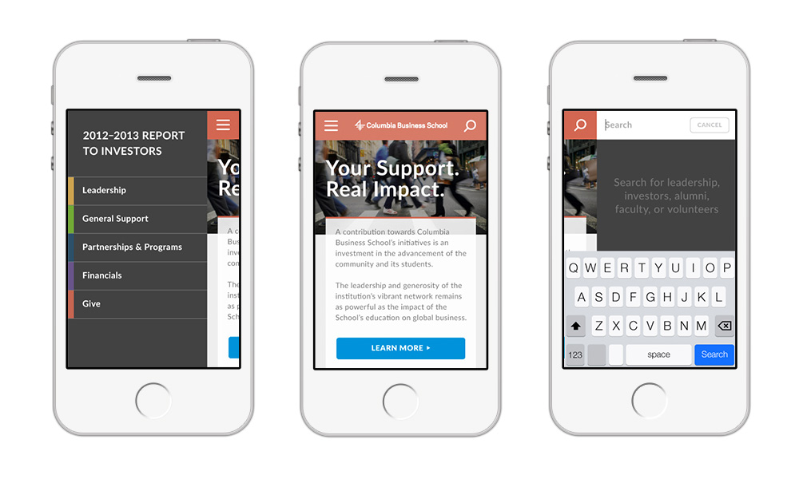

Graphic design UX
Exploration for the Report to Investors, a responsive site that acknowledges and commends thousands of donors and volunteers who contributed towards Columbia's initiatives during the fiscal year, and provides ROI data to encourage ongoing support. The design is refreshed each year and promoted by a direct mail piece that is sent to students, staff, alumni and friends of the school.
